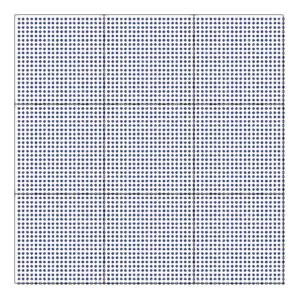
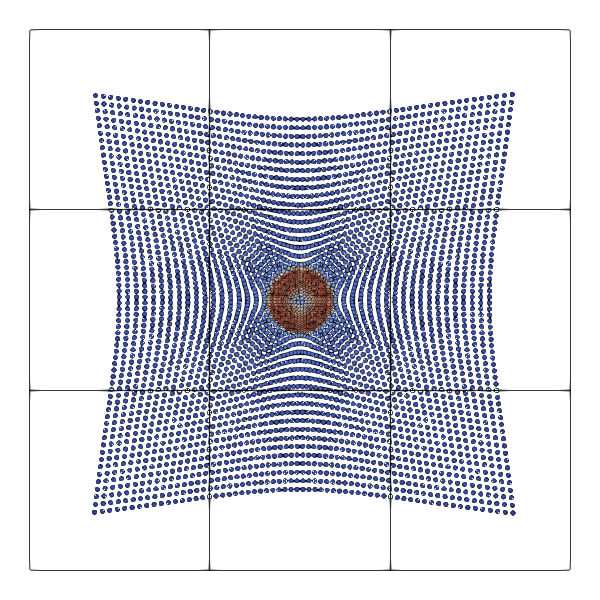
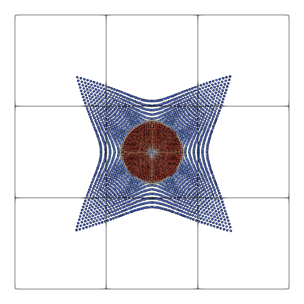

Simple Noh implosion test benchmark in 2D with \( N ^d \) particles. The setup yields snapshots similar to the ones below.



As with all Swift 2 experiments, you have to ensure that you translate with
--enable-particles --enable-swift
before you start working with the scripts. Furthermore, the Python path has to be set properly:
export PYTHONPATH=~/../../../../python
The benchmark suite is designed to study three different things:
- The impact of the mesh concept on the computational cost, i.e. to which degree does the mesh introduce overhead or manage to reduce the computational complexity.
- The impact of different memory layouts on the time to solution.
- The efficacy and efficiency of the vectorisation over selected kernels.
Obviously, these three properties are tightly interconnected.
Clean-up data
No matter which setup you run: Once you have created your executables, you might want to get rid of all the generated glue code that sits in your directory. To clean up all generated data, type in
rm *patch-file *.vtu *.pvd
rm vertexdata celldata globaldata repositories observers
Validate correctness
I've written a variant of the code which automatically checks if particles get losted.
export PYTHONPATH=$PYTHONPATH:../../../../python
TIMESTEP_SIZE=0.0001
PLOT_DELTA=0.0
END_TIME=0.01
PLOT_DELTA=0.0
REALISATION=domain-decomposition.scattered.bucket-sort.no-optimisation
python3
noh.py -dt $TIMESTEP_SIZE -et $END_TIME -np $N_PART -
plot $PLOT_DELTA -rea $REALISATION -v -
m release -o noh2D.$REALISATION-asserts; cp repositories/ModifiedGlobalState.cpp repositories/GlobalState.cpp; clear; make
Setups like this build a standard executable with assertions (or release). After that one is built, they swap in a slightly altered GlobalState.cpp file which is usually overwritten after each Python rerun, i.e. solely generated. This tweaked state tracks the number of particles after the first time step and then ensures in each subsequent time step that the number of particles is preserved. Otherwise it quits (also in release mode) and dumps some relevant particle history information.
Impact of memory layouts and sorting
The impact of the various memory layouts and the sorting variations have to be assessed using a representative and reasonably large setup. Furthermore, it might make sense to restrict the studies to one NUMA node only on a production-level chip. The rationale here is that most codes would deploy one MPI rank per NUMA domain to avoid NUMA effects/penalties.
Before we start, we have to build the executables (build-memory-layout.sh):
#!/bin/sh
export PYTHONPATH=$PYTHONPATH:../../../../python
# Script to run experiment (Noh 2D)
# Parameters
TIMESTEP_SIZE=0.0001
#N_PART=2000
PLOT_DELTA=0.0
rm noh2D.*
rm profile-noh2D.*
rm README-*.md
set -e
for REALISATION in domain-decomposition.scattered.bucket-sort.no-optimisation domain-decomposition.continuous-per-vertex.bucket-sort.no-optimisation domain-decomposition.continuous-per-vertex.bucket-sort.vectorise-distance-checks-preamble domain-decomposition.continuous-per-vertex.bucket-sort.vectorise-all
do
echo build $REALISATION
N_PART=5000
PLOT_DELTA=0.0
END_TIME=0.1
python3 noh.py -dt $TIMESTEP_SIZE -et $END_TIME -np $N_PART -plot $PLOT_DELTA -rea $REALISATION -v -m release -o noh2D.$REALISATION
echo build $REALISATION
N_PART=2000
PLOT_DELTA=0.0
END_TIME=0.0005
python3 noh.py -dt $TIMESTEP_SIZE -et $END_TIME -np $N_PART -plot $PLOT_DELTA -rea $REALISATION -v -m release -o profile-noh2D.$REALISATION
# N_PART=120
# PLOT_DELTA=0.001
# python3 noh.py -dt $TIMESTEP_SIZE -et $END_TIME -np $N_PART -plot $PLOT_DELTA -rea $REALISATION -v -m release -o noh2D.$REALISATION-test
# #
# # See remarks on correctness checks in README.dox in the section "Validate correctness"
# #
# cp repositories/ModifiedGlobalState.cpp repositories/GlobalState.cpp; make -j
done
Once all the executables are there, we set the number of available cores (for OpenMP, setting OMP_NUM_THREADS=xxx does the job) and submit tests via
#!/bin/sh
#
# Ensure that script terminates if one run fails
#
set -e
for REALISATION in domain-decomposition.scattered.bucket-sort.no-optimisation domain-decomposition.scattered.bucket-sort.outer-guards \
domain-decomposition.scattered.multiscale-sort.no-optimisation domain-decomposition.scattered.multiscale-sort.outer-guards \
domain-decomposition.continuous-per-vertex.bucket-sort.no-optimisation domain-decomposition.continuous-per-vertex.bucket-sort.outer-guards \
domain-decomposition.continuous-per-vertex.bucket-sort.vectorise-all domain-decomposition.continuous-per-vertex.bucket-sort.vectorise-distance-checks \
domain-decomposition.continuous-per-vertex.multiscale-sort.no-optimisation domain-decomposition.continuous-per-vertex.multiscale-sort.outer-guards \
domain-decomposition.continuous-per-vertex.multiscale-sort.vectorise-all domain-decomposition.continuous-per-vertex.multiscale-sort.vectorise-distance-checks \
domain-decomposition.global-continuous.bucket-sort.no-optimisation domain-decomposition.global-continuous.bucket-sort.outer-guards \
domain-decomposition.global-continuous.bucket-sort.vectorise-all domain-decomposition.global-continuous.bucket-sort.vectorise-distance-checks \
domain-decomposition.global-continuous.multiscale-sort.no-optimisation domain-decomposition.global-continuous.multiscale-sort.outer-guards \
domain-decomposition.global-continuous.multiscale-sort.vectorise-all domain-decomposition.global-continuous.multiscale-sort.vectorise-distance-checks \
task-tree.scattered.bucket-sort.no-optimisation task-tree.scattered.bucket-sort.outer-guards \
task-tree.scattered.multiscale-sort.no-optimisation task-tree.scattered.multiscale-sort.outer-guards \
task-tree.continuous-per-vertex.bucket-sort.no-optimisation task-tree.continuous-per-vertex.bucket-sort.outer-guards \
task-tree.continuous-per-vertex.bucket-sort.vectorise-all task-tree.continuous-per-vertex.bucket-sort.vectorise-distance-checks \
task-tree.continuous-per-vertex.multiscale-sort.no-optimisation task-tree.continuous-per-vertex.multiscale-sort.outer-guards \
task-tree.continuous-per-vertex.multiscale-sort.vectorise-all task-tree.continuous-per-vertex.multiscale-sort.vectorise-distance-checks \
task-tree.global-continuous.bucket-sort.no-optimisation task-tree.global-continuous.bucket-sort.outer-guards \
task-tree.global-continuous.bucket-sort.vectorise-all task-tree.global-continuous.bucket-sort.vectorise-distance-checks \
task-tree.global-continuous.multiscale-sort.no-optimisation task-tree.global-continuous.multiscale-sort.outer-guards \
task-tree.global-continuous.multiscale-sort.vectorise-all task-tree.global-continuous.multiscale-sort.vectorise-distance-checks \
task-graph.scattered.bucket-sort.no-optimisation task-graph.scattered.bucket-sort.outer-guards \
task-graph.scattered.multiscale-sort.no-optimisation task-graph.scattered.multiscale-sort.outer-guards \
task-graph.continuous-per-vertex.bucket-sort.no-optimisation task-graph.continuous-per-vertex.bucket-sort.outer-guards \
task-graph.continuous-per-vertex.bucket-sort.vectorise-all task-graph.continuous-per-vertex.bucket-sort.vectorise-distance-checks \
task-graph.continuous-per-vertex.multiscale-sort.no-optimisation task-graph.continuous-per-vertex.multiscale-sort.outer-guards \
task-graph.continuous-per-vertex.multiscale-sort.vectorise-all task-graph.continuous-per-vertex.multiscale-sort.vectorise-distance-checks \
task-graph.global-continuous.bucket-sort.no-optimisation task-graph.global-continuous.bucket-sort.outer-guards \
task-graph.global-continuous.bucket-sort.vectorise-all task-graph.global-continuous.bucket-sort.vectorise-distance-checks \
task-graph.global-continuous.multiscale-sort.no-optimisation task-graph.global-continuous.multiscale-sort.outer-guards \
task-graph.global-continuous.multiscale-sort.vectorise-all task-graph.global-continuous.multiscale-sort.vectorise-distance-checks
do
EXECUTABLE=noh2D.$REALISATION
echo $EXECUTABLE
./$EXECUTABLE > $EXECUTABLE"-"$OMP_NUM_THREADS"-threads.out"
done
After completion, we zip the outcome via
tar -czvf MyMachine-$OMP_NUM_THREADS-threads.tar.gz *.out
The zipped outcome can be visualised by a call similar to
python3
plot-comparison-of-implementation-variants.py -o MyMachine MyMachine-8-threads.tar.gz MyMachine-16-threads.tar.gz ...
On SuperMUC, we see some irregularities for the biggest setups. Therefore, it makes sense to exclude them from some visualisation:
python3
plot-comparison-of-implementation-variants.py -o SuperMUC SuperMUC-112-threads.tar.gz SuperMUC-56-threads.tar.gz SuperMUC-28-threads.tar.gz SuperMUC-14-threads.tar.gz
python3
plot-comparison-of-implementation-variants.py -o SuperMUC-small SuperMUC-56-threads.tar.gz SuperMUC-28-threads.tar.gz SuperMUC-14-threads.tar.gz
The impact of the mesh on the global runtime
- Todo
- This is all to be rewritten
The present setup does work with constant cut-off radii. That is, once the particles are created, they do not change their interaction range. This is not what you will find in a lot of "realistic" SPH simulations, where the cut-off radius adopts to the particle distribution in space. However, it is reasonable to eliminate this dimension of complexity to assess the algortihmic impact of the cut-off.
To start a proper discussion of the latter, we first have to understand the cost relative to the particle count without any mesh. Unfortunately, Peano cannot work all without a mesh. We can however make the mesh comprise only 3x3 cells (see snapshots above). The script shipped with the present code does not allow us to set the mesh directly, but we can specify the number of particles per cell that we want to obain. This is, we can control the mesh resolution indirectly.
The beauty of these experiments is the physical accuracy: We may never pick a cut-off that is smaller than the interaction radius that the physics yield. By essentially removing the cut-off globally, we implicitly always pick a cut-off that's bigger than the physical interaction radius. It is automatically valid all the time.
Create benchmark executables
Here are some classic setups that I use for benchmarking:
| np | end time | ppc | mesh size |
| 100 | 1e-1 | 100 | * |
| 100 | 1e-1 | 200 | 9x9 (81) |
| 200 | 1e-1 | 200 | 27x27 (729) |
| 200 | 1e-1 | 800 | 9x9 (81) |
| 400 | 1e-2 | 200 | * |
| 400 | 1e-2 | 800 | 27x27 (729) |
| 400 | 1e-2 | 2000 | 9x9 (81) |
| 800 | 1e-2 | 200 | 81x81 (6,561) x |
| 800 | 1e-2 | 1200 | 27x27 (729) |
| 800 | 1e-2 | 8000 | 9x9 (81) |
| 1200 | 1e-3 | 800 | 81x81 (6,561) |
| 1200 | 1e-3 | 12000 | 27x27 (729) |
| 1200 | 1e-3 | 24000 | 9x9 (81) |
| 2400 | 5e-4 | 200 | 243x243 (59,049) |
| 2400 | 5e-4 | 1200 | 81x81 (6,561) |
| 2400 | 5e-4 | 8000 | 27x27 (729) |
| 2400 | 5e-4 | 84000 | 9x9 (81) |
- Todo
- We have to extend this list
These values are just popular ones we use for benchmarking. The setups marked with * use a way too fine mesh and therefore cannot capture the physical interaction radius. They yield physical nonsense. The ones marked with an x run into this situation too after a few time steps. So you can use them for benchmarking (to make statements on the algorithmic efficiency), but they should not be used for proper benchmarks making validity claims on the outcome.
To find out how the correlation of np and ppc affects the mesh construction, you can either go down the trial and error route, or you can study the generated README-noh2D.md file, which enlists exactly which particle properties are set and how they will affect the coarsest mesh size.
MPI
The MPI parallelisation is based upon the mesh, i.e. you cannot exploit more than 9 ranks if your mesh is only 9 cells large. At the same time, any imbalance on the MPI level will directly propagate through to the runtime. That is, if you use a 81 cell mesh with 4 ranks, you will have three ranks hosting 20 cells, but the fourth rank will host 21 and the setup hence will be imbalanced right from the start.
Old docu
Experimental setup
We allow the user to specify the number of particles per axis via the Python argument –particle-number (or -np). We aim for roughly 20 particles per cell, which is physically unreasonable, but we can do so for this test, which means that it is reasonable to start with a mesh size of roughly \( \frac{1}{np} \cdot 20 \sqrt[-1]{d} \).
Below is a rough guideline (overview) of particle per axis and outcome for 2d experiments:
| np | initial mesh cells | mesh cells after insertion |
| 10 | 9 (3x3) | 81 (9x9) |
| 20 | 9 (3x3) | 81 (9x9) |
| 40 | 9 (3x3) | 81 (9x9) |
| 80 | 81 (9x9) | 729 (27x27) |
| 160 | 729 (27x27) | 6,561 (81x81) |
| 320 | 729 (27x27) | 6,561 (81x81) |
| 640 | 6,561 (81x81) | 59,049 |
As always, the important detail is to study all artifacts that our Python API produces. Per executable, you will obtain a README-my-exec.md file which details your settings, provides
Benchmark different configurations
For benchmarking, I typically pick rather short runtimes and disable the plots.
python3
noh.py -np 320 -
plot 0 -et 0.001
We can pick certain mantisssa sizes via the ms argument. Please note that the code sets all variables besides the position to the chosen accuracy. For real real-world setups, you probably want to pick different mantissa accuracies per attribute.
Vectorisation studies
The Noh benchmark is one of our classic test cases to study vectorisation of the kernels. Our first subject of study is the function swift2::kernels::forceKernelVectorised() which is a nice function to see what has to be done to get good SIMD efficiency, but it makes sense to study more than this simple single kernel. Before we tweak this function, I recommend to re-translate with the Intel compiler, and to include "-O3 -xHost" in the code. Alternatively, you might want to use "-Ofast -march=native". After that, I typically add one more flag to the setup: "-qopt-report=3".
These instructions follow Swift's generic recommendations when it comes to the development of vectorised solvers. You might want to add the optimisation report to all of Peano, but then you'll get a mass of optimisation reports which are difficult to digest. Therefore, I often only add this flag to the actual project's Makefile. However, any Python script rerun will overwrite the Makefile. Therefore, it is important to make backups.
Code changes
All the changes that are required within the Python script to switch to a particular optimisation are all encoded via the script argument optimisation. Run the Python script with –help to get an overview, and search the script for args.optimisation for details. The steps are rather simple:
- If the optimisation is enabled, we first need another graph compiler. We use
if args.optimisation != "none":
project.algorithm_steps_task_graph_compiler =
swift2.graphcompiler.map_particle_steps_onto_separate_mesh_traversals_insert_dummy_sweeps_and_vectorise
This file is part of the SWIFT 2 project.
- Next, we have to switch to a coalesced memory access. This is not required if we only study the impact of the memory re-arrangement:
name=name,
dimensions_hydro=hydro_dimensions,
cfl_factor=args.cfl_factor,
initial_time_step_size=args.timestep_size,
constant_time_step_size=True,
swift_project_namespace=project_namespace,
particles_per_cell=particles_per_cell,
min_h=max_cell_size,
max_h=max_cell_size,
use_optimised_coalesced_memory_access_kernels = args.optimisation == "vectorise-per-vertex"
)
This file is part of the SWIFT 2 project.
- Finally, we alter the actual administration of the particle sets:
particle_set = project.add_particle_species(particle)
if args.optimisation == "continuous-per-vertex" or args.optimisation == "vectorise-per-vertex":
else:
particle_set.generator =
peano4.
toolbox.
particles.ParticleSetGenerator_ScatteredOnHeap_IndexByList(particle_set)
Insights
- The kernel swift2::kernels::forceKernelVectorised() is used by the routine computeHydroForce(). It makes sense to grep the cpp files within observers for a call to this routine, and then to open the corresponding .optrpt file of the cpp file. Vectorisation should be successful for the routine calling forceKernelVectorised() and look similar to
LOOP BEGIN at ../../../../src/
swift2/
kernels/ParticleParticleInteraction.cpph (580, 7)
LOOP BEGIN at ../../../../src/
swift2/
kernels/ParticleParticleInteraction.cpph (589, 11)
remark #15300: LOOP WAS VECTORIZED
remark #15305: vectorization support: vector length 4
remark #15475: --- begin vector loop cost summary ---
remark #15476: scalar cost: 310.000000
remark #15477: vector cost: 148.000000
remark #15478: estimated potential speedup: 2.062500
remark #15309: vectorization support: normalized vectorization overhead 0.140625
remark #15482: vectorized math library calls: 3
remark #15484: vector function calls: 0
remark #15485: serialized function calls: 0
remark #15488: --- end vector loop cost summary ---
remark #15447: --- begin vector loop memory reference summary ---
remark #15450: unmasked unaligned unit stride loads: 0
remark #15451: unmasked unaligned unit stride stores: 0
remark #15456: masked unaligned unit stride loads: 0
remark #15457: masked unaligned unit stride stores: 0
remark #15458: masked indexed (or gather) loads: 0
remark #15459: masked indexed (or scatter) stores: 0
remark #15462: unmasked indexed (or gather) loads: 19
remark #15463: unmasked indexed (or scatter) stores: 0
remark #15567: Gathers are generated due to non-unit stride index of the corresponding loads.
remark #15554: Unmasked VLS-optimized loads (each
part of the group counted separately): 0
remark #15555: Masked VLS-optimized loads (each
part of the group counted separately): 0
remark #15556: Unmasked VLS-optimized stores (each
part of the group counted separately): 0
remark #15557: Masked VLS-optimized stores (each
part of the group counted separately): 0
remark #15497: vector compress: 0
remark #15498: vector expand: 0
remark #15474: --- end vector loop memory reference summary ---
remark #25587: Loop has reduction
LOOP BEGIN at ../../../../src/
swift2/
kernels/kernel_hydro.h (206, 3)
remark #25436: Loop completely unrolled by 3
LOOP END
LOOP BEGIN at ../../../../src/
swift2/
kernels/kernel_hydro.h (206, 3)
remark #25436: Loop completely unrolled by 3
LOOP END
LOOP END
Particle fields for the SPH particles.